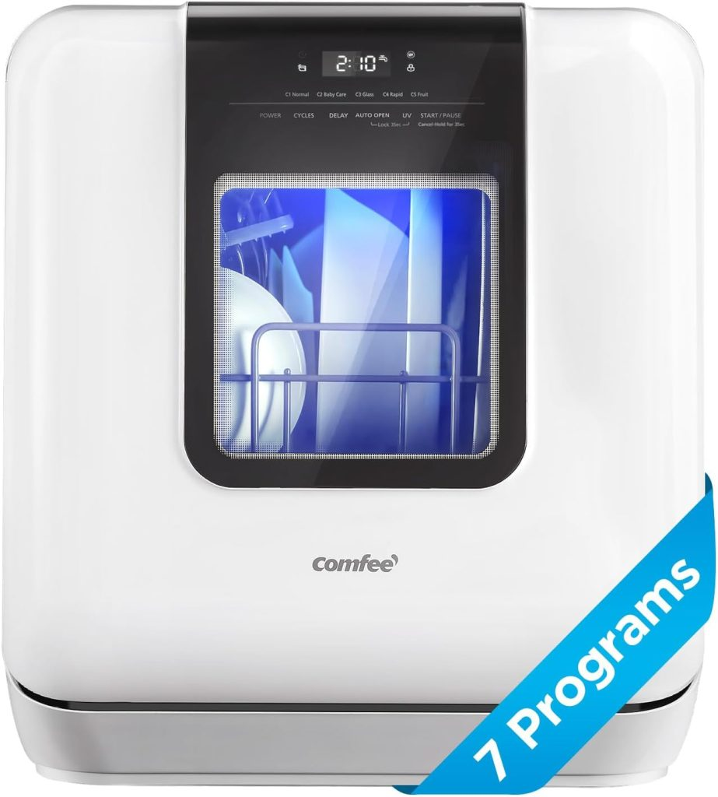
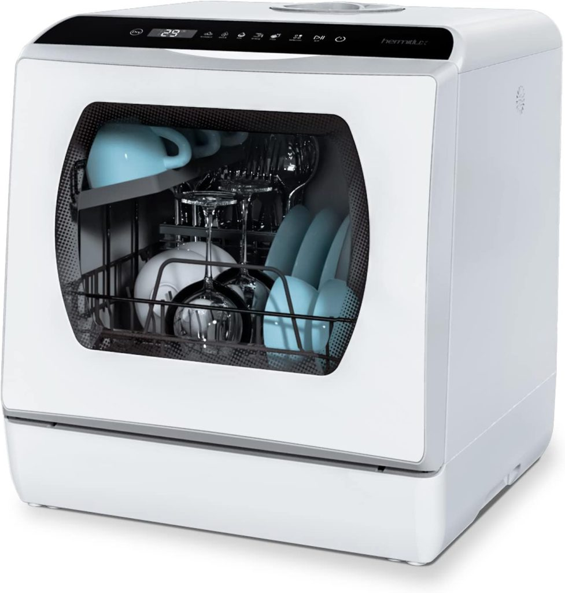
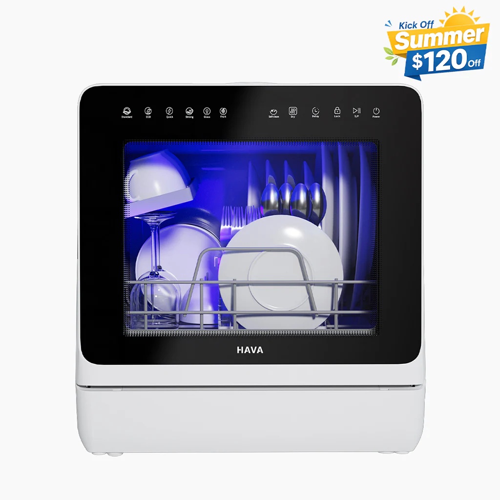

Doing dishes by hand every single day in a small apartment, dorm room, or RV is one of those chores that quietly steals hours from your week — and in 2026, there is simply no reason to keep doing it that way. The latest generation of countertop dishwashers with built-in water tanks means you no longer need a sink hookup, a landlord's permission, or a permanent installation to get sparkling clean dishes every day. You just fill the tank, press a button, and walk away.
Whether you are in a studio apartment with no plumbing access, living full-time in an RV, or sharing a dorm room where a faucet connection is not an option, this guide covers every model worth buying in 2026 — with real specs, honest comparisons, and clear recommendations for every budget and living situation.

Why a Countertop Dishwasher With a Built-In Water Tank Is the Smartest Small Space Upgrade in 2026?
What Makes a Water Tank Model Different From a Faucet Hookup Dishwasher?
Most people are familiar with portable dishwashers that roll up to a sink and connect via a faucet adapter — but a water tank model works completely differently. Instead of connecting to your plumbing at all, you simply pour water into a built-in reservoir (typically 5 liters / 1.32 gallons) using the included jug or pitcher, and the machine handles everything from there — heating the water, running spray arms, draining into a bucket or sink, and drying your dishes.
This makes water tank dishwashers genuinely plumbing-free. You can place them on any flat surface with a standard 120V outlet nearby — a kitchen counter, a bathroom vanity, an RV galley, a garage workbench, or even a covered patio. Faucet hookup models need to be next to a sink every single time. Water tank models go wherever you go.
Who Needs a Countertop Dishwasher With No Plumbing?
This is not a niche appliance. A countertop dishwasher with a built-in water tank is the right choice if any of these describe your situation:
- You rent an apartment or studio where the kitchen has no space near a sink for a portable unit
- You live in an RV, campervan, boat, or tiny home where the water supply is limited or unpredictable
- You are in a dorm room with shared kitchen facilities and no dedicated sink hookup
- You are in temporary accommodation — a furnished rental, an extended hotel stay, or a work-site trailer
- You simply want total flexibility in where the machine sits in your kitchen
If you already have reliable sink access and want larger capacity for a household of two or more, scroll down to the faucet hookup section. Both situations are covered fully in this guide.
How Much Water and Money Do You Actually Save?
The math on water savings is genuinely compelling. The average person running the tap while hand-washing a typical day's dishes uses between 15 and 20 gallons of water. A countertop dishwasher with a water tank uses just 5 liters — roughly 1.3 gallons — per full cycle. Over a month of daily use, that is a difference of hundreds of gallons.
| Washing Method | Water Per Load | Best For |
|---|---|---|
| Hand Washing | 15–20 gallons | No appliance access |
| Faucet Hookup Portable Dishwasher | 2–4 gallons | Apartments with sink access |
| Built-In Water Tank Dishwasher | ~1.3 gallons (5L) | RVs, dorms, no plumbing |
Beyond water savings, energy draw on these compact units is minimal. The Euhomy and HAVA models reviewed below use well under 1 kWh per cycle — some as low as 0.35 kWh — which translates to running costs of just a few dollars per month even with daily use.
If you are already looking to cut laundry time in a small space as well as dishwashing time, see our guide to the Best Portable Washing Machines for Apartment Living for the other half of the equation.
Quick Comparison — Best Portable and Countertop Dishwashers in 2026
| Model | Tank / Hookup | Place Settings | No Plumbing | Approx. Price | Best For |
|---|---|---|---|---|---|
| COMFEE' Portable Mini | 5L Tank | 6 | Yes | ~$299 | RVs & Dorms |
| Hermitlux Countertop | 5L Tank | 4–5 | Yes | ~$296 | Budget Buyers |
| HAVA R09 | 5L Tank | 3–4 | Yes | ~$320 | Tech Features + Hard Water |
| Euhomy Countertop | 5L Tank | 4–5 | Yes | ~$250 | Best Value Daily Use |
| GE GPT225SSLSS 24-Inch | Faucet Hookup | 14 | No | ~$849 | Larger Households |
| Danby DDW631SDB | Faucet Hookup | 6 | No | ~$450 | Best Overall Countertop |
| BLACK+DECKER BCD6W | Faucet Hookup | 6 | No | ~$314 | Spacious Countertop |
In-Depth Reviews — Best Countertop Dishwashers With Built-In Water Tank
1. COMFEE' Portable Mini Dishwasher — Best Overall Water Tank Model

The COMFEE' has been one of the most consistently recommended water tank dishwashers for apartment and RV users for good reason. It fits 6 place settings or up to 70 individual pieces of tableware and runs a 162°F high-temperature cycle that provides genuine sanitization — not just cleaning — which matters enormously in shared living spaces and when washing baby items or pet accessories.
The 360-degree dual spray arms cover every angle of the load, and the air-dry function means dishes come out genuinely dry rather than wet and steaming. At 21.6 inches wide it is wider than some of the other tank models on this list, so measure your counter space before ordering, but the interior room that width provides is what makes the 6 place setting capacity possible.
Specs at a Glance
| Spec | Detail |
|---|---|
| Water Tank | 5L / 1.32 gallons |
| Dimensions | 21.6" W × 19.7" D × 17.2" H |
| Weight | ~38 lbs |
| Wash Programs | 6 |
| Max Temp | 162°F |
| Drying | Air dry |
| Noise Level | ~50 dBA |
| Approximate Price | ~$299 |
Pros and Cons
| Pros | Cons |
|---|---|
| 6 place settings — most of any tank model | Wider footprint than competitors |
| 162°F sanitizing wash | Air dry only (no heated drying) |
| True no-hookup operation | Heavier than budget alternatives |
| Dual 360° spray arms | |
| Competitively priced for capacity |
Best For: Solo renters and couples in apartments or RVs who want the most interior room of any water tank model without paying a premium.
🛒 Buy Now: COMFEE' Portable Mini Dishwasher on Amazon
2. Hermitlux Countertop Dishwasher — Best Budget Water Tank Pick

If budget is the primary concern and you still want a genuinely capable daily driver, the Hermitlux delivers more than its price tag suggests. At just 30 pounds it is the lightest model on this entire list — making it the easiest to move between counter and storage, and the most practical choice if you change apartments regularly or want to take it on an extended trip.
The 5-liter built-in tank and 7 wash programs (on the current primary variant) handle 4–5 place settings competently, and the LED display with glass viewing door on select models adds a level of usability that more expensive units do not always match. Noise levels of 52–55 dBA keep it well within apartment-friendly range.
Specs at a Glance
| Spec | Detail |
|---|---|
| Water Tank | 5L / 1.32 gallons |
| Dimensions | 16.85" W × 16.73" D × 18.23" H |
| Weight | 30 lbs |
| Wash Programs | 5–7 (varies by variant) |
| Drying | Air dry |
| Noise Level | 52–55 dBA |
| Approximate Price | ~$296 |
Pros and Cons
| Pros | Cons |
|---|---|
| Lightest model on this list at 30 lbs | Smaller capacity (4–5 place settings) |
| Glass viewing door on select variants | Fewer programs than some competitors |
| 7 wash programs | No heated drying option |
| Compact enough for the tightest counters | |
| Strong price-to-performance ratio |
Best For: Budget-conscious buyers who want a light, compact, truly portable unit they can move easily and store in a cabinet when not in use.
🛒 Buy Now: Hermitlux Countertop Dishwasher on Amazon
3. HAVA R09 Countertop Dishwasher — Best for Hard Water and Advanced Features

The HAVA R09 is the most feature-rich water tank dishwasher currently available, and it earns that status through genuine innovations rather than spec sheet padding. The headline feature is its integrated water softener — the only countertop water tank model in this price range to include one. If you live in an area with hard water, limescale buildup inside a dishwasher is a real long-term problem, and the R09 addresses it at the machine level so you do not have to rely on descaling tablets or workarounds.
The R09 also offers an 18-hour delayed start — the longest of any model reviewed here — allowing you to set it to run overnight or during off-peak energy hours without standing by. At 0.35 kWh per cycle it has a Class D energy rating, which is more efficient than most similar models that sit at Class F. With 8 wash programs including a sanitizing cycle reaching 167°F, child lock, and a redesigned adjustable dish rack that holds 30+ items, it is the clear choice if you want the most capable tank-based dishwasher available.
The trade-off is capacity: the R09 officially holds 3 place settings, slightly less than the COMFEE' or Euhomy. For a single person or a couple where not every meal produces a full set of dishes, this is a non-issue. For a household that runs the machine once a day for two people's full meals, the COMFEE' may serve better.
Specs at a Glance
| Spec | Detail |
|---|---|
| Water Tank | 5L / 1.32 gallons |
| Dimensions | ~16.85" W × 16.75" H × 18" H |
| Weight | 31.5 lbs |
| Wash Programs | 7–8 |
| Max Temp | 167°F |
| Drying | PTC hot air |
| Noise Level | 60 dB |
| Energy | 0.35 kWh / cycle (Class D) |
| Delayed Start | Up to 18 hours |
| Approximate Price | ~$320 |
Pros and Cons
| Pros | Cons |
|---|---|
| Built-in water softener — only tank model with this | Slightly higher price than competitors |
| 18-hour delayed start | 3 official place settings (smallest of the group) |
| 0.35 kWh — lowest energy draw reviewed | 60 dB slightly louder than Euhomy / Hermitlux |
| 167°F sanitizing cycle | |
| PTC hot air drying | |
| Sleek design, available in multiple colors |
Best For: Anyone in a hard water area, tech-forward users who want delayed start and precise scheduling, and design-conscious apartment dwellers who want the machine to look as good on the counter as it performs.
🛒 Buy Now: HAVA R09 on HAVA's Website or Amazon
4. Euhomy Countertop Dishwasher — Best Value for Daily Apartment Use

The Euhomy hits the sweet spot of price, performance, and noise level better than any other model on this list. Running at just 40 dB — quieter than a library whisper — it is the most apartment-friendly dishwasher reviewed here by a meaningful margin. You can run it during a work-from-home call, while your baby sleeps in the next room, or late at night without a second thought.
The 5L built-in tank handles 4–5 place settings across 6 programs (Normal, Quick, ECO, Baby Care/Heavy at 167°F, Fruit, and Dry), and the 29-minute Quick cycle is genuinely useful when you need clean cups and utensils fast. The upgraded 8-program variant available from Lowe's and Amazon adds Self-Clean, Child Lock, and a Delay mode for even more flexibility at a modest price premium. The dual spray arm system provides 360-degree coverage and the 60-minute hot air drying followed by 73 hours of automatic ventilation means dishes stay genuinely dry and odor-free.
At around $250 it undercuts the HAVA and COMFEE' while matching or beating them on the features most people actually use every day.
Specs at a Glance
| Spec | Detail |
|---|---|
| Water Tank | 5L / 1.32 gallons |
| Dimensions | 16.83" W × 16.73" D × 18.03" H |
| Weight | ~33 lbs |
| Wash Programs | 6 (standard) / 8 (upgraded variant) |
| Max Temp | 167°F (Baby Care / Heavy mode) |
| Drying | Hot air 60 min + 73hr ventilation |
| Noise Level | 40 dB |
| Certifications | ETL and DOE certified |
| Approximate Price | ~$250 |
Pros and Cons
| Pros | Cons |
|---|---|
| 40 dB — quietest model reviewed | No water softener (unlike HAVA R09) |
| 167°F Baby Care / heavy sanitizing cycle | 8-program variant costs slightly more |
| 73-hour post-wash ventilation keeps dishes odor-free | Delay mode only on upgraded variant |
| ETL and DOE certified | |
| Best price-to-performance ratio on this list | |
| 29-minute Quick cycle |
Best For: Apartment dwellers who want the quietest possible daily operation and the best overall value — especially parents of young children who need a reliable Baby Care sanitizing cycle.
🛒 Buy Now: Euhomy Countertop Dishwasher on Amazon
Best Portable Countertop Dishwashers With Faucet Hookup — Also Worth Considering
If you have reliable sink access, a faucet hookup model gives you larger capacity and the convenience of unlimited water volume without manually refilling a tank. These three models cover every budget from mid-range to full-capacity portable.
5. GE GPT225SSLSS 24-Inch Portable Dishwasher — Best Large Portable
The GE rolls on heavy-duty casters and holds up to 14 place settings with a stainless steel interior tub, Piranha hard food disposer, and a sanitize cycle that reaches 150°F to kill 99% of bacteria. At 54 dBA and ENERGY Star certified, it runs quietly and cheaply enough for daily household use. This is the right pick if your household regularly runs full loads and you want full-size dishwasher performance without the permanent installation.
🛒 Buy Now: GE GPT225SSLSS on GE Appliances (~$849)
6. Danby DDW631SDB — Best Overall Countertop Faucet Hookup Model
The Danby connects to any standard faucet in under 60 seconds, holds 6 place settings with plates up to 10 inches, offers 8 wash cycles, and uses only 2.6 gallons per regular cycle. At 52 dBA and ENERGY Star certified it is quiet enough for apartment living and small enough (21.65" W × 19.69" D × 17.24" H) to sit permanently on the counter or slide into a cabinet. The 8 cycle options give you versatility that most countertop competitors do not offer at this price point.
🛒 Buy Now: Danby DDW631SDB on Amazon (~$450)
7. BLACK+DECKER BCD6W — Best Spacious Countertop Faucet Hookup Model
The BLACK+DECKER accommodates 10-inch plates and tall glasses at just 21.7 inches wide. Seven wash cycles with delay start, heated dry, and a childproof lock give you full control, while the LED display makes operation intuitive. At 54 dB and ENERGY Star certified, it is apartment-friendly across the board. The delay start feature is particularly valuable for running a cycle overnight or during off-peak hours.
🛒 Buy Now: BLACK+DECKER BCD6W on Amazon (~$314)
Already sorted on dishwashing and need to tackle laundry too? See our picks for the Best Portable Washer and Dryer Combos for small space living.
What Reddit Users Actually Say About Countertop Dishwashers With Water Tanks?
The Most Common Reddit Complaints — and How These Models Address Them
Communities like r/malelivingspace, r/vandwellers, r/LifeProTips, and r/minimalism have produced thousands of posts and comments on compact dishwashers over the past few years. The complaints that come up most consistently are worth addressing directly, because they reflect real-world use rather than manufacturer specs.
Complaint 1: The tank is annoying to refill between loads. This is a fair critique of the category. The 5L tank on all four water tank models reviewed here handles one full cycle — not two. If you pile up two days of dishes and want to run back-to-back loads, you will need to refill. The workaround used by most owners is to simply connect the included inlet hose to a faucet for back-to-back loads and use the tank mode only when placement away from the sink is needed. All four models here support both modes.
Complaint 2: Drying performance is inconsistent. This tends to affect the cheapest air-dry-only units. Among the models reviewed here, the Euhomy's 60-minute hot air drying plus 73-hour ventilation and the HAVA R09's PTC hot air drying both outperform air-dry-only models significantly. In humid apartment environments, adding rinse aid makes an additional noticeable difference regardless of which model you use.
Complaint 3: Spray arms do not reach tall glasses or items at the edges. The COMFEE's 360-degree dual spray arm design and the Euhomy's dual arm system both address this more effectively than single-arm budget units. Loading technique matters too — cups and glasses face down, and tall items go on the outer edges to avoid blocking the spray arm rotation.
Reddit's Most Recommended Models in 2026
Among the water tank category, the COMFEE' and Euhomy consistently rank highest in community discussions for everyday apartment use — primarily because of their combination of value, capacity, and quiet operation. The HAVA R01 and R09 get strong recommendations in RV and van-life communities specifically, where the hard water softener and flexible tank-or-faucet dual mode are particularly valued. The Hermitlux tends to be recommended in budget-focused threads where portability and low weight are the primary concern.
What Consumer Reports Testing Standards Tell Us About Countertop Dishwashers?
The Four Key Criteria Consumer Reports Uses to Evaluate Dishwashers
Consumer Reports tests dishwashers across four primary performance areas: cleaning performance (how thoroughly dishes, glasses, and cookware are cleaned across cycle types), drying performance (whether dishes come out genuinely dry or need towel-drying), noise level (measured in dBA under controlled conditions), and energy and water efficiency (consumption per cycle versus claimed specs).
For compact countertop and tank-based models, cleaning and drying performance are the two areas where budget units most commonly fall short of their claimed specs — which is why the reviews in this guide focus heavily on wash temperature and drying mechanism rather than just cycle count.
How Our Top Water Tank Picks Perform Against Those Standards
| Model | Cleaning Performance | Drying Method | Noise Level | Energy Efficiency |
|---|---|---|---|---|
| COMFEE' Portable Mini | Strong — 162°F + dual spray | Air dry | ~50 dBA | Low — 5L per cycle |
| Hermitlux | Good — adequate for daily loads | Air dry | 52–55 dBA | Low — 5L per cycle |
| HAVA R09 | Strong — 167°F + water softener | PTC hot air | 60 dB | Very low — 0.35 kWh |
| Euhomy | Strong — 167°F Baby Care cycle | Hot air 60min + 73hr ventilation | 40 dB | Low — ETL/DOE certified |
How to Choose the Right Portable Countertop Dishwasher With No Plumbing?
Tank Size — Does 5 Liters Cover a Full Everyday Load?
All four water tank models reviewed here use a 5-liter / 1.32-gallon built-in tank, and yes — 5 liters is sufficient for one complete wash cycle. The machines use pressurized spray arms to recirculate and maximize coverage from that fixed water volume, meaning the wash is more water-efficient than simply pouring 5 liters over your dishes would suggest. For most single people and couples, one tank fill equals one full day's dishes.
Wash Cycles — What You Actually Need vs What Looks Good on a Spec Sheet
Manufacturers love advertising high cycle counts, but in practice most daily users run two or three programs almost exclusively: a Normal cycle for everyday dishes, a Quick cycle when you need items clean fast, and a Baby Care or Heavy cycle for sanitizing. The Eco cycle matters if energy cost is a concern. Glass mode matters if you own delicate stemware. Everything beyond that is largely marketing. Any model with at least 5–6 cycles covers genuine real-world needs.
Finding the Smallest Countertop Dishwasher for Tight Spaces
For the tightest kitchen counters, the width and depth measurements matter more than height. Here is how all four water tank models compare by footprint:
| Model | Width | Depth | Height | Weight |
|---|---|---|---|---|
| Hermitlux | 16.85" | 16.73" | 18.23" | 30 lbs |
| Euhomy | 16.83" | 16.73" | 18.03" | ~33 lbs |
| HAVA R09 | ~16.85" | ~16.75" | ~18" | 31.5 lbs |
| COMFEE' Portable Mini | 21.6" | 19.7" | 17.2" | ~38 lbs |
The Hermitlux, Euhomy, and HAVA R09 are all nearly identical in footprint and are genuinely the smallest countertop dishwashers currently available that offer a full wash cycle. Any of these three will fit comfortably on a standard kitchen counter even in the tightest studio kitchens. The COMFEE' requires roughly the same counter space as a large microwave.
Noise Levels — What Is Actually Apartment Safe?
The generally accepted threshold for apartment-friendly operation is below 55 dBA — roughly the level of a quiet conversation or a humming refrigerator. All four tank models in this guide fall at or below that level:
- Euhomy: 40 dB — essentially silent in an open-plan apartment
- COMFEE': ~50 dBA — quiet enough to run during a phone call
- Hermitlux: 52–55 dBA — comfortable for most apartment environments
- HAVA R09: 60 dB — slightly above the quietest models but still acceptable in most settings
If noise is your primary concern above all others, the Euhomy's 40 dB rating is in a class of its own.
Budget vs Premium — Where Spending More Actually Pays Off
The jump from the Euhomy (~$250) to the HAVA R09 (~$320) is justified specifically if you have hard water or want an 18-hour delayed start. The water softener alone extends the machine's lifespan meaningfully in hard water areas and keeps dishes free of white mineral deposits that cheaper machines develop over months of use. For soft water areas, the Euhomy delivers comparable cleaning performance at a lower cost.
Keeping your entire small kitchen clean beyond just dishes? See our full guide to the Best Portable Kitchen Appliances for small spaces.
Countertop Dishwasher vs Portable Dishwasher — Which One Is Right for You?
The term "portable dishwasher" covers two genuinely different product categories that are often confused. Here is a clear breakdown:
Key Differences at a Glance
| Feature | Countertop Water Tank | Portable Faucet Hookup |
|---|---|---|
| Plumbing needed | No — fill by hand | Yes — faucet adapter |
| Capacity | 4–6 place settings | Up to 14 place settings |
| Best for | Solo, dorms, RVs, no sink access | Couples, larger apartments with sink |
| Mobility | Very high — any flat surface | Medium — needs to be near a sink |
| Price range | $250–$320 | $314–$849 |
| Footprint | Countertop only | Full floor-standing unit |
When a Full-Size Portable Dishwasher Makes More Sense?
If your household regularly produces enough dishes to fill more than 6 place settings per day, you have reliable sink access, and you have floor space for a rolling unit, a full-size portable like the GE GPT225SSLSS will serve you significantly better than any countertop model. The capacity difference between 6 and 14 place settings is substantial for a household of two or more.
For a complete breakdown covering every type of portable laundry and dishwashing appliance for small spaces, the Ultimate Guide to Portable Laundry and Dishwashing Appliances for Small Spaces covers everything in one place.
How to Use a Portable Countertop Dishwasher With a Water Tank — Step by Step
First Time Setup in Under 10 Minutes
Every water tank dishwasher reviewed here arrives ready to use straight from the box with no installation required. Place the unit on a flat, stable surface near a power outlet. Run one empty Self-Clean cycle (available on the HAVA R09 and Euhomy 8-program variant) or a Normal cycle with no dishes to flush out any residual factory water. Some units arrive with a small amount of test water inside — this is normal and not a defect. Then load your first real cycle and you are done.
How to Fill the Tank Correctly for the Best Clean Every Time?
Most units include a plastic jug for filling. Fill the jug from your kitchen or bathroom tap and pour it into the top-mounted tank inlet until the water level indicator signals full (typically at the 5L mark). For best cleaning results, use warm water rather than cold — warm water activates dishwasher detergent faster and improves first-cycle performance noticeably. If your kitchen tap produces hot water within a reasonable time, use it.
Which Detergent Pods and Rinse Aids Work Best in Tank-Based Models?
Standard dishwasher pods (Finish, Cascade, store-brand equivalents) work well in all four models. For the best drying results — especially in humid apartment environments — add liquid rinse aid to the dispenser compartment. Rinse aid is more impactful in air-dry-only models (COMFEE', Hermitlux) than in machines with heated drying, but it improves results across the board. Avoid gel detergents if possible — pods or powder dissolve more cleanly in compact machines.
How to Clean the Filter and Maintain Your Machine Long Term?
The filter is the most important maintenance item on any compact dishwasher. Remove it every 2–4 weeks (more frequently if you skip pre-scraping food off dishes), rinse it under running water, and use a soft brush to clear any debris. Scale buildup in the interior can be addressed with a citric acid descaling tablet run on an empty cycle once a month in hard water areas — or quarterly in soft water areas. Keeping the door seal wiped down after each cycle prevents mold in humid environments.
For a full deep clean of your kitchen appliances beyond just the dishwasher, our guide to the Best Portable Steam Cleaners and Pressure Washers is worth a read.
Frequently Asked Questions
What is the best countertop dishwasher with a built-in water tank in 2026?
For most people the Euhomy offers the best overall combination of price (~$250), performance, quiet operation (40 dB), and ease of use. If you have hard water or want delayed start scheduling, the HAVA R09 is worth the additional spend. For the largest capacity in the water tank category, the COMFEE' holds 6 place settings — more than any other tank-based model reviewed here.
Can a countertop dishwasher with a water tank actually clean dishes properly without plumbing?
Yes — and for most everyday dish loads, the cleaning results are indistinguishable from a faucet-connected or full-size machine. The 167°F Baby Care / Heavy cycles on the Euhomy and HAVA R09 sanitize effectively, and the dual spray arm systems on the COMFEE' and Euhomy provide thorough coverage. The main limitation is load size, not cleaning performance.
What is the smallest countertop dishwasher you can buy right now?
The Euhomy, Hermitlux, and HAVA R09 are all nearly identical in footprint at approximately 16.8 inches wide by 16.7 inches deep — making them the smallest full-function countertop dishwashers currently available. All three fit comfortably on a standard studio apartment counter.
Is the HAVA countertop dishwasher worth buying in 2026?
Yes, specifically the R09 model if you are in a hard water area. The integrated water softener is the only one available in a tank-based countertop dishwasher at this price point and it makes a meaningful difference to long-term performance and dish quality. The 18-hour delayed start and 0.35 kWh energy draw are also genuinely useful daily features. If you are in a soft water area, the Euhomy offers comparable cleaning at a lower price.
How does the Euhomy countertop dishwasher compare to the COMFEE'?
The Euhomy is significantly quieter (40 dB vs ~50 dBA), less expensive (~$250 vs ~$299), and has a smaller footprint. The COMFEE' holds more items per load (6 place settings vs 4–5) and has been on the market longer with a larger base of real-world user reviews. For a single person prioritizing quiet and value, the Euhomy wins. For a couple who needs to run one load per day covering both people's meals, the COMFEE's larger capacity is the better fit.
What does Reddit recommend for a countertop dishwasher with no hookup required?
In RV and van-life communities, the HAVA models consistently come up as a top recommendation, particularly for their hard water handling and the flexibility of dual tank/faucet operation. In apartment-focused communities, the COMFEE' and Euhomy are most frequently mentioned as reliable everyday performers. The Hermitlux is regularly recommended in budget-focused threads for its low weight and compact footprint.
Can I use a water tank countertop dishwasher in an RV or dorm room?
Yes — this is exactly what they are designed for. All four tank-based models reviewed here operate from any standard 120V outlet with no plumbing required, making them equally functional in an RV galley, a dorm room kitchenette, a tiny home, or a studio apartment. The drain hose empties into a bucket, a sink, or wherever is convenient — no waste connection needed.
How does a portable dishwasher differ from a countertop dishwasher?
A portable dishwasher is typically a full-height floor-standing unit (like the GE GPT225SSLSS) that rolls to a sink and connects via a faucet adapter — offering large capacity for a full household but requiring proximity to a sink. A countertop dishwasher is a compact unit that sits on the counter, holds fewer place settings, and in water tank variants requires no plumbing at all. The right choice depends on your household size and whether you have reliable sink access.
Final Verdict — Which Portable or Countertop Dishwasher Should You Buy in 2026?
Our Final Recommendation by Situation
| Your Situation | Best Pick |
|---|---|
| Best overall value, no plumbing | Euhomy Countertop Dishwasher |
| Hard water area, advanced features | HAVA R09 |
| Most capacity in tank category | COMFEE' Portable Mini |
| Tightest budget, lightest weight | Hermitlux |
| Have sink access, solo or couple | Danby DDW631SDB |
| Have sink access, want delay start | BLACK+DECKER BCD6W |
| Larger household, full capacity | GE GPT225SSLSS 24-Inch Portable |
The bottom line is simple: if you do not have sink access or want placement flexibility, the Euhomy is the best daily driver for the money in 2026 — and the HAVA R09 is worth the step-up if hard water is a factor. If you do have sink access and want more capacity, the Danby and BLACK+DECKER deliver that without requiring a major investment. And if you need full-household volume, the GE remains the benchmark portable.
Any of these models delivers a genuine, measurable quality-of-life improvement over hand washing from the very first day — whether you are in a studio apartment, an RV, or a dorm room.
You May Also Like: